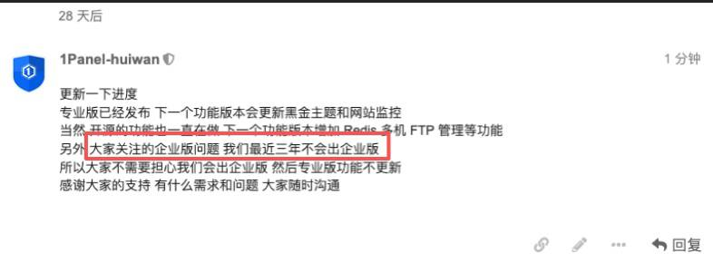

1Panel企业版：企业全员落地WorkBuddy的好帮手：
https://t.co/JuVIxrQMjl
1Panel企业版上线KVM Web UI，实现虚拟机全生命周期管理： https://t.co/tg5BqhokNT

1Panel企业版上线KVM Web UI，实现虚拟机全生命周期管理： https://t.co/tg5BqhokNT

1Panel说三年内不会出企业版，于是1Panel企业版+WorkBuddy个人版”的组合方案，为企业提供了一种兼顾成本控制与安全合规的桌面智能体落地路径
提供统一的虚拟化运维管理能力，涵盖虚拟机、ISO镜像、模板、网络及存储池的全方位维护；
支持环境资源总览，实时掌握CPU、内存、存储、网络等关键指标； https://t.co/8hTOJo6MXD
提供统一的虚拟化运维管理能力，涵盖虚拟机、ISO镜像、模板、网络及存储池的全方位维护；
支持环境资源总览，实时掌握CPU、内存、存储、网络等关键指标； https://t.co/8hTOJo6MXD